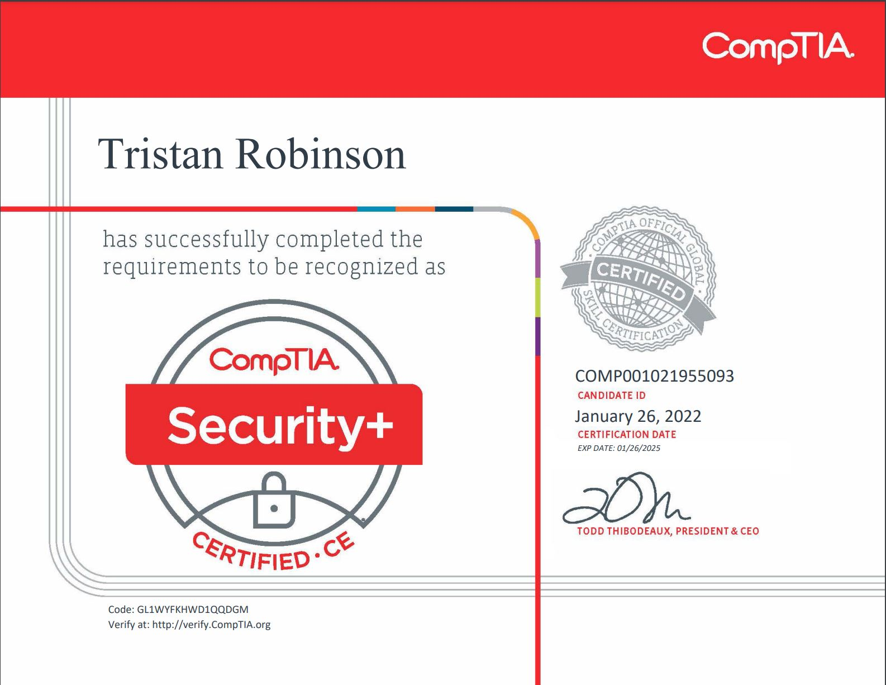
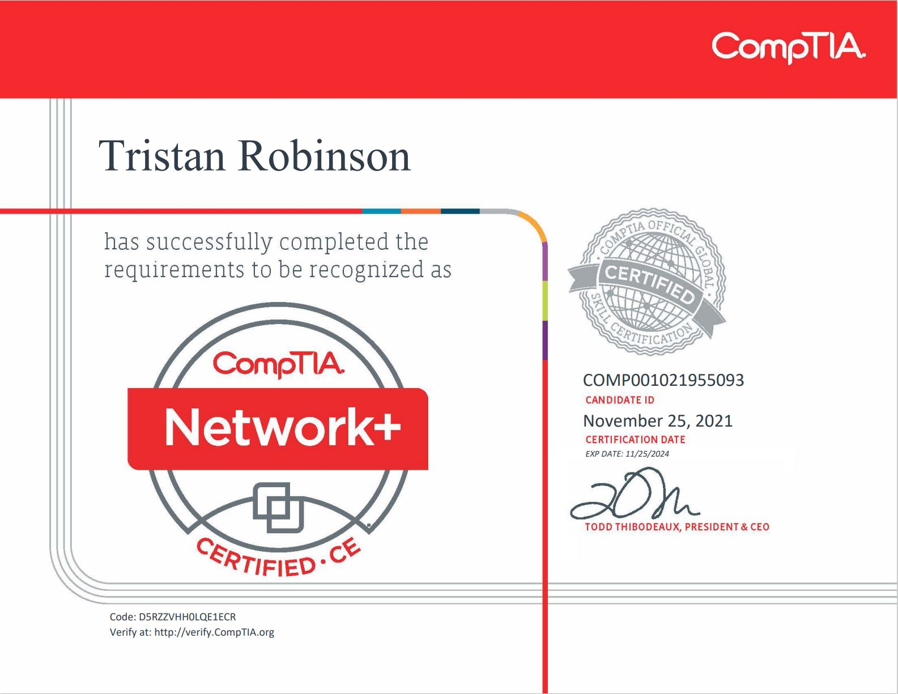
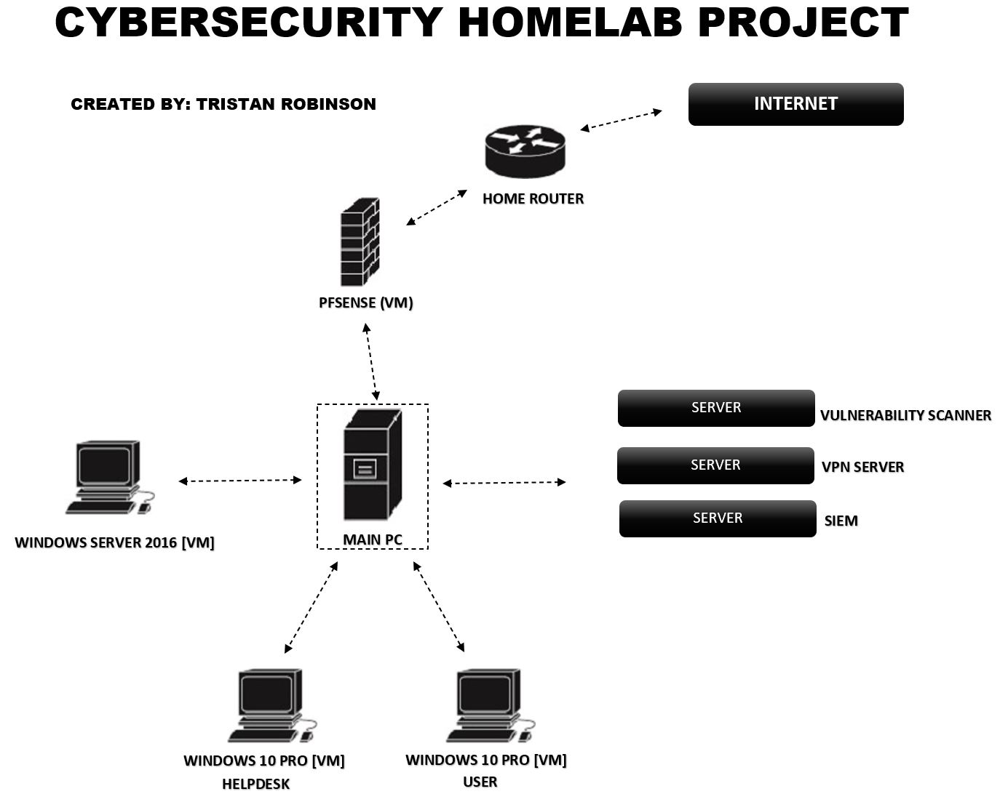
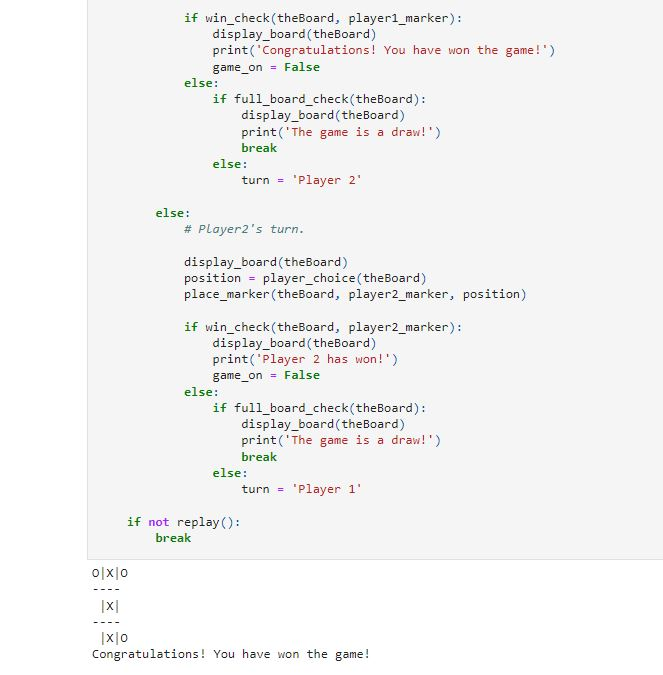

EXECUTIVE SUMMARY
Innovative Systems Administrator with a specific focus on cloud solutions and information security. Ready to leverage a blend of formal and hands-on experience developed from a background in customer service and consistent training. Demonstrated expertise in fostering team growth, spearheading stakeholder col-laboration, and achieving organizational goals. Eager to contribute to advanced cloud infrastructure, en-suring optimal security and IT service delivery. Committed to continued professional advancement in the ever-evolving landscape of cloud computing.

PPROFESSIONAL COMPETENCIES
- Cloud & Security: AWS | Azure | nmap | Wireshark |Virus Total | Azure VPN
- Programing: | Python | Jupiter Notebook | Visual Studio Code | Anaconda | Solidity | Bash | Powershell |
- Software & Administration: Active Directory | Microsoft Office tools | Beyond Trust | Visio | NICE CXOne | Oracle VM | ServiceNow | Microsoft Azure | Intune/Endpoint | SharePoint | Apple Business | Azure AD | Papercut
- Web Development: | HTML/CSS | JavaScript |
- OS: | Linux | Ubuntu | Kali | Windows Series | MAC OS X
- Security Frameworks & Processes: MITRE ATT&CK Framework | Pre-ATT&CK tactics matrix | Dia-mond Model of Intrusion Analysis | Kill Chain | SOC processes | Malware Analysis | Threat Hunting
TECHNICAL SKILLS
- Solid understanding of common network services and protocols.
- Expertise in system setup, configuration, and administration on prem and cloud platforms.
- Familiar with network configurations, including Load Balancers, VPNs, and Virtual Networks
- Proficient in system automation and script management using tools like Logic Apps and CLI.
- Hands-on experience with data management solutions: GP SQL Database, Blob Storage, and backup procedures.
- Good Understanding of various SOC processes like monitoring, analysis, playbooks, escalation, inci-dent documentation, SLAs, client meetings, report walk throughs, bridge calls, RFPs, etc...
- Skilled in system monitoring, troubleshooting, and performance optimization.
- Expertise in hybrid system integration, connecting Azure cloud to on-premises systems.
- Knowledgeable in deployment workflows and CI/CD pipelines using Azure DevOps.
- Dedication to ongoing professional growth and keeping abreast of system administration trends and best practices.
LATEST PROJECT

CYBERSECURITY HOMELAB PROJECT

TicTacToe 2 PLAYER GAME
